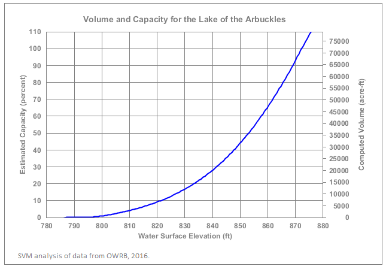
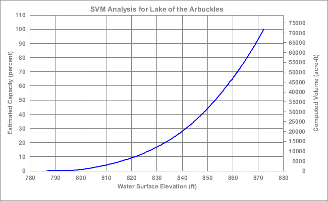
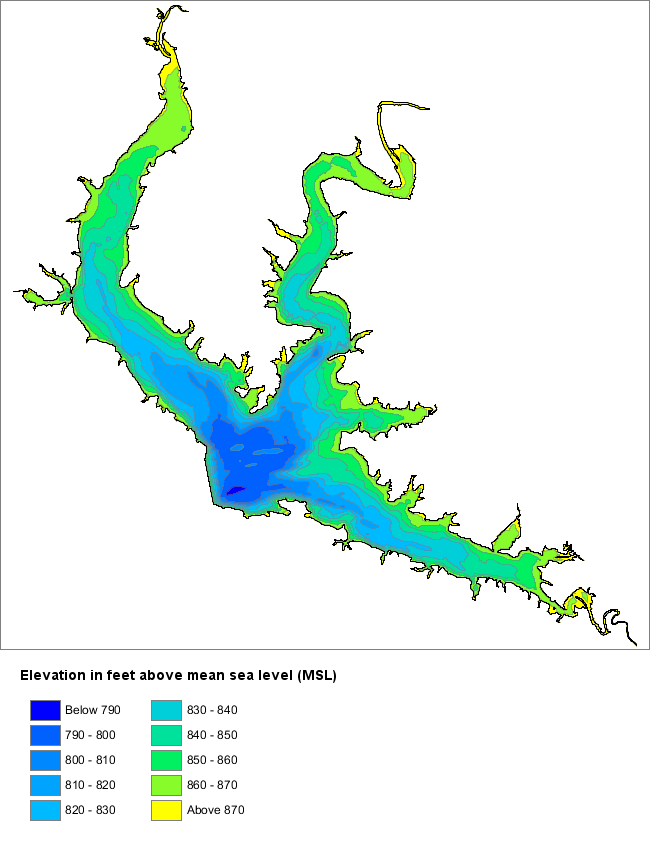
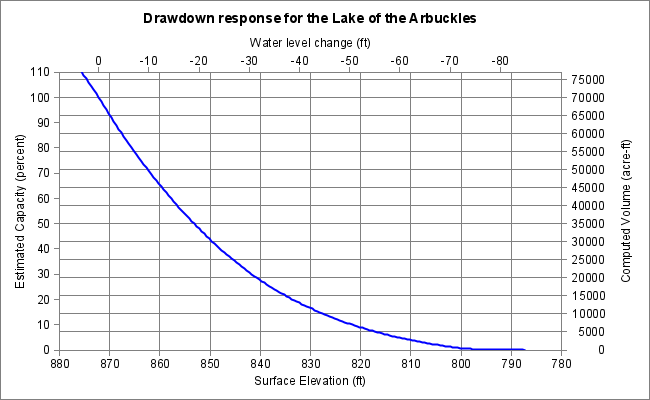

Using the Simple Volumetric Model
Introduction
The previous article in this series introduced the Simple Volumetric Model (SVM), an application that computes the capacity, volume, and surface area for a lake or reservoir based on variations in water level (see Lucas, 2019). That article focused on the general principles and algorithms used in the model. This article will offer practical guidance on how to configure and use the application for your own data analysis purposes. If you are interested in running the SVM, this article will show you how.
The SVM Process
During a drought, the most readily apparent indicator of a shrinking water volume for a lake or reservoir is the elevation of the surface and shoreline. The Simple Volumetric Model provides a tool for translating the observed water level to an estimated volume and capacity. SVM computes these values by using established spatial analysis techniques to process hydrographic survey data and create a digital model of the lake or reservoir structure. That model can relate changes in water level to changes in the overall volume of the water mass.
The hydrographic data that SVM uses is most commonly collected by survey vessels using sonar-based fathometers coupled to GPS systems. In this article, I use the soundings collected by one such survey to demonstrate the procedures for operating SVM. The data I use was obtained from a 2016 survey of the Lake of the Arbuckles which is located in Murray County, Oklahoma. The data was downloaded from the Oklahoma Water Resource Board [OWRB] Surface Water Studies website.
The results from the SVM model are illustrated in the figure below.
One feature that is apparent in the graph above is that the relationship between surface level and volume goes both ways. Given the level of the water's surface, we can estimate volume. Given the volume of the water mass, we can predict the surface level. SVM also provides a similar result for surface area with a similar relationship to water level.
Analysis Products and Exporting Data to GIS Applications
The main analysis product for SVM is a text-based summary of overall metadata for the body of water being studied and a table of water-level versus volume/area computations suitable for use in Excel, R, or other mainstream analysis tools.
SVM also supports a number of other output products. Some of these are intended for analysis or verification purposes. Others allow users to export the results of a SVM model run to mainstream GIS tools such as QGIS and ArcGIS. A summary of output options is given in the table below.
| Element | Format | Description |
|---|---|---|
| Report File | Text File | A record of the processing and summary of the analysis results. Includes computed volumes, surface area, metadata for input sources, and run-time information. |
| Water-Level Table | Comma Separated Value (CSV) | Tabular data giving volume and surface area as a function of water level. Suitable for export into spreadsheet applications such as Excel |
| Contour Graph | Image File (PNG, JPEG, etc.) | A simple plot of contours created from bathymetry (non-georeferenced) |
| Capacity Graph | Image File (PNG, JPEG, etc.) | A graph showing water level versus capacity and volume (shown above) |
| Drawdown Graph | Image File (PNG, JPEG, etc.) | A graph showing the reponse of capacity and volume to drawdown events |
| Contour Region Shapefile | Polygon Shapefile | A shapefile of the regions produced by contouring the data. Georeferenced and suitable for export to GIS applications |
| Contour Line Shapefile | Polyline Shapefile | A shapefile of the contour lines produced by contouring the data. Georeferenced and suitable for export to GIS applications |
| Raster Image | Image File (PNG, JPEG, etc.) | An image file created by constructing an interpolated raster (grid) from the elevation data. Georeferenced using an "aux.xml" file and a "world" file (.pgw or jpw). Suitable for export to GIS applications |
| Numerical Raster Data | ESRI Floating-Point File | A numerical raster file created by constructing an interpolated raster (grid) from the elevation data. Stored in ESRI's floating-point (binary grid) file format. Georeferenced using an "aux.xml" file and suitable for export to many GIS applications. Intended to support integration with Map Algebra and raster calculation operations. Data in this format may also be used to produce shaded-relief imagery and to support other data rendering operations. |
At present, the Simple Volumetric Model (SVM) is implemented as a command-line and scripting application that does not provide a Graphical User Interface (GUI). If there is sufficient interest from potential users, the Tinfour project will develop a truly interactive application with a mature GUI in the future.
Until then, operating the SVM does require some knowledge of computer concepts and using a command-window interface. Information about setting up Tinfour and launching a command-window is given in our companion wiki articles Tinfour Execution from the Command Line and Tinfour Execution Shortcut for Windows.
Getting Started
Once Tinfour is set up, you should be able to launch the Simple Volumetric Model using the "fat jar" file _TinfourSvm-2.1.7-jar-with-dependencies.jar_ (making appropriate adjustments for the Tinfour release you are using). This Jar file is bundled with all the dependencies and resources required for SVM. You may launch it from the command window by changing the directory to the folder where the Jar file is located and typing the following command:
java -jar TinfourSvm-2.1.7-jar-with-dependencies.jar -help
If your installation is set up correctly, this command will result in the application printing a short set of help information to the command window:
Usage information for Simple Volumetric Model (SVM)
-properties <file> Specifies the path for the input properties file
-template Prints an example properties file to the console
-inspect <file or directory>
Inspects and reports on the content
of the specified Shapefile and its associated
DBF file. If a directory is specified, reports
the content of every Shapefile in the directory
Often, it is convenient to rename the SVM Jar file to something shorter. To save typing, I also like to temporarily copy the Jar file to the folder where I am working. For the rest of the examples in the text to follow, we will assume that is what we've done and we will use the name "SVM.jar" in all our command example. So, in the example above, the command becomes
java -jar SVM.jar -help
The SVM Properties File
SVM uses the specifications in a properties file to determine where to obtain input bathymetry data and options for performing its analysis. The -properties option should be followed by a file-specification providing a valid path for the input properties file. For example, if the specifications for analysis were given in a file named _SVM_example.properties_, the command to process the problem it specifies would be:
java -jar SVM.jar -properties SVM_example.properties
The properties file is a simple text file formatted in a syntax based on the conventions used in many Java applications. To see what one looks like, you could type the following command
java -jar SVM.jar -template
This command prints the text of an example SVM properties file to the command window. If you wish, you can redirect the output to a file and then edit that file for your particular input data and desired results. The template file includes quite a bit of documentation describing the properties that SVM supports. It also provides, as an example, the settings that were used for the Alan Henry Reservoir analysis described in the previous article.
The third option, -inspect, provides a way to print the metadata for files giving data in the industry-standard Shapefile format. I used this option when I was first trying to understand the content of the Shapefiles that were used for the previous articles. If you have access to a conventional GIS tools such as ArcGIS or QGIS, you may use them to inspect (and edit) the content of your data sources. If not, you may find the SVM -inspect option helpful, particularly since it prints its results in a format that was designed specifically for the needs of users setting up SVM properties files. The -inspect option can be used to process either an individual Shapefile or an entire folder containing multiple Shapefiles. For example, if you had a folder named ReservoirData that contained several Shapefiles you could use one of the following commands:
java -jar SVM.jar -inspect ReservoirData/Sample1.shp > Sample1.txt
java -jar SVM.jar -inspect ReservoirData > AllShapefiles.txt
For the example above, I redirected the output to a text files to be written to the current directory. Redirection is a good way to preserve text for future review or incorporating it into documents for printing. We will use the inspection results in our discussion below to help configure a properties file for processing.
Configuring the SVM Properties File – Step-by-Step
Now that we've introduced the basic operation of the Simple Volumetric Model, let's trace through the steps of configuring a properties file for processing data.
Of course, before we can use SVM, we need some data to work with. For this article, we will use Shapefiles for the Lake of the Arbuckes which was mentioned above. The lake will serve as an interesting example because it is the principle water supply reservoir for the city of Ardmore, Oklahoma.
The Arbuckle data includes two primary Shapefiles. The file named "Arbuckle_Collected_Points.shp" gives sounding data (elevation points) collected during the bathymetric survey of 2016. The file named "Arbuckle_Boundary.shp" gives polygon features that trace the shoreline of the lake. In order to provide an accurate assessment of lake volume and surface area, SVM needs both. Boundary files are required because they provide "modeling constraints" that restrict the region processed by the analysis logic to the actual the limits of the body of water being studied. Without them, the SVM model would have to assume that it was operating over a region defined by a convex polygon. This concept was discussed at length in my earlier article Using-the-Delaunay-to-Compute Lake Volume. It is illustrated by the figure below. Its images offer constrasting depictions of how the Delaunay Triangulation (and the SVM) treats the data without the constraint polygons, and how that changes when shoreline constraints are added. The figure also provides us our first look at a map of the Lake of the Arbuckles:

When processing data in SVM, it is critical that the input data use consistent horizontal and vertical coordinate systems. Both the Arbuckle Shapefiles use the Oklahoma State Plan Coordinate System (South) which gives elevations and position data in feet.
Note: SVM assumes that the constraint Shapefile defines polygons bounding bodies of water. In the case where the lake or reservoir includes islands, you may include the islands as "holes" in the polygons following the standard Shapefile conventions. If you are using a GIS tool, this action should be one of the standard operations for authoring or editing water features. SVM supports Shapefiles with multiple features.
The text below shows the content of a file named "SvmArbuckle.properties" that provides specifications for analyzing the Arbuckle data. We will see where these settings came from in the discussion below. The main input properties are _samples_, _bounds_, and the _input folder_ settings. The _samples_ specification indicates the name of the data file containing input soundings (data samples). The _bounds_ specification indicates the name of the file that provides polygon constraints. The optional input and output folder specifications are a convenience feature that tells SVM where to look for input files and where to write its output. Using the optional folder setting eliminates the need to supply a complete path specifications for input and output files. If the optional folder settings are supplied, a simple filename will suffice for these specifications.
For this example, we will assume that the Arbuckle Shapefiles were downloaded and stored in a folder named "C:/SvmExamples/Arbuckle/Shapefiles" and that we wish to write the output reports to a folder named "C:/SvmExamples/Arbuckle/Analysis". In your own work, you may adjust these settings as necessary.
bathymetryModel = elevation
inputFolder = C:/SvmExamples/Arbuckle/Shapefiles
outputFolder = C:/SvmExamples/Arbuckle/Analysis
samples = Arbuckle_Collected_Points.shp | Elevation
bounds = Arbuckle_Boundary.shp | Elevation
#shorelineReferenceElevation = 872.2
remediateFlatTriangles = true
unitOfDistance = ft
unitOfArea = acres | 43560
unitOfVolume = acre-ft | 43560
report = SvmArbuckle.txt
table = SvmArbuckle.csv
tableInterval = 0.5
Step 1: Inspection
The first step in setting up an SVM specification for a set of Shapefiles is to understand the structure of the input data. To gain some insight into the content we can review then using the -inspect option introduced above. The text below shows the output from the -inspect command. For clarity, I have removed some less important elements from the example.
java -jar SVM.jar -inspect Arbuckle_Collected_Points.shp
Shapefile Name: Arbuckle_Collected_Points.shp
Shapefiile Type: Point
Bounds
X Min,Max: 2254348.039955, 2277391.420049
Y Min,Max: 395668.459932, 420245.939977
Analysis of DBF file
N Records: 100593
N Fields: 4
type width min max
0. XCoord F 19.11 2254348.040000 2277391.420000
1. YCoord F 19.11 395668.460000 420245.940000
2. Elevation F 19.11 786.560000 871.200000
3. Depth F 19.11 -84.880000 -0.240000
A Shapefile is not actually a single file, but rather a set of multiple data files. The Shapefile data set includes a main shape/geometry file which is assigned the extension ".shp". It also includes a "database" file (.dbf extension) that supplies the metadata for each geospatial feature described in the geometry file.
The content of the DBF data file is established by whoever creates the Shapefile product, but it usually includes several named data fields. In the case of the Arbuckle points file, it gives both the depth of the sounding data as well as the elevation of the lake bottom at the indicated positions. The choice of elevation or depth as an input to the model depends on the nature of the source data. Some shapefiles provide only elevation data, some provide only depth data and some, like Arbuckle, provide both.
For this example, we will use Elevation. To use elevation, we must specify to elements in the properties file. First, we need to indicate that we are using an Elevation bathymetry model. And second, we need to tell SVM which field from the Shapefile metadata it should use.
bathymetryModel = Elevation
samples = Arbuckle_Collected_Points.shp | Elevation
If we wanted, we could have used depth values. You'll notice that depth values given in the Arbuckle sample are given as negative numbers. Some shapefiles use positive values. The depth model works for either approach and give a correct interpretation as long as the input does not mix both positive and negative values. So for the Arbuckle shapefiles we can use the attribute named "Depth" with bathymetryModel set to Depth as shown below:
bathymetryModel = Depth
samples = Arbuckle_Collected_Points.shp | Depth
Java properties files are written using "key-value pairs" separated by equal signs. In the text above, the word "samples" is the key that indicates that the line gives a specification for data sample points (a.k.a. "soundings" or "bathymetry points"). The value "Arbuckle_Collected_Points.shp" gives the name of the Shapefile to be used to obtain sample points. It could optionally be a full-path but, because the input-folder setting is provided, only the file name is required.
In the example, the vertical-bar (or "pipe") character is used as a separator for sub-elements of the properties value. That usage is a slight departure from the conventional Java key-value pair syntax. SVM uses it to introduce supplemental specifications. In this case, it tells SVM should to the DBF data field "Elevation" from the Shapefile "Arbuckle_Collected_Points.shp" to provide the vertical coordinates for its sample points.
Now let's look at the inspection results for the Arbuckle boundary file:
Shapefile Name: Arbuckle_Boundary.shp
Shapefile Type: Polygon
Bounds
X Min,Max: 2253906.643200, 2278570.735276
Y Min,Max: 395248.015563, 420612.212538
Analysis of DBF file
N Records: 1
N Fields: 4
type width min max
0. Shape_Leng F 19.11 260839.217946 260839.217946
1. Shape_Area F 19.11 102727022.065000 102727022.065000
2. Elevation F 19.11 872.200000 872.200000
3. Acres F 19.11 2358.297359 2358.297359
The bounds file contains only a single polygon for the entire lake. As with the soundings data, the boundary polygon has an associated Elevation attribute. SVM uses this elevation data as the upper limit of the water level for modeling. In effect, it assumes that when the water raises to the elevation of the bounding polygons, the lake or reservoir is filled to capacity. SVM refers to this elevation parameter as the "shoreline reference elevation." Some data issuing authorities refer to it as the "conservation pool elevation."
Not all data sets provide a convenient elevation attribute for the bounding polygons. In some cases, it is necessary for the properties file to specify an explicit value to be used for modeling. In the example properties above, the specification is provided as a comment.
#shorelineReferenceElevation = 872.2
Step 2: Correct for Flat Triangles
The next elements we will look at is the remediation setting for flat triangles. This setting tells SVM to make adjustments for the near-shore areas where data collection is incomplete and sometimes leads to the creation of flat triangles. This issue was discussed at length in Using-the-Delaunay-to-Create-a-Reservoir-Volume-Model. Except for testing purposes, it should always be set to true.
Step 3: Output Settings
Step 3.a: Specify Units of Measure
The raw data for the Lake of the Arbuckles is given in feet. While this unit system is convenient for measuring depth (at least if you happen to be an American), it is less useful for the very large magnitude values that would be computed for surface area and volume. By convention, American water management authorities often use acres and acre-feet for these values. To format the output from SVM to Imperial units, the Arbuckle properties file uses the following settings:
unitOfDistance = ft
unitOfArea = acres | 43560
unitOfVolume = acre-ft | 43560
Note the use of the vertical-bar character to separate sub-elements in the specification. There are 43560 square feet in an acre. So these settings convert square feet to acres and cubic-feet to acre-feet. The conversion is performed by dividing the original units (in this case, feet) by the factor (in this case, 43560). As an alternate example, consider the case where the unit of distance were in meters. Without a conversion factor, SVM would normally interpret the "meters" specification to indicate that area computations should be displayed in square meters. If we wished to display area values in hectares, we would specify a conversion factor of 10000.
Incidentally, you may be thinking that the number 43560 is a rather odd choice. Why not a round number like 50000? Well, the origins of the acre may be lost to history, but I like to think that a long time ago a clever person realized that the number 43560 had a lot of integer factors. 43560 = 3 × 3 × 5 × 8 × 11 × 11. The fact that it has so many integer factors makes it easy to parcel an acre out into smaller pieces, whether it be thirds, halves, quarters, tenths, or even elevenths (okay, the last one is a bit unlikely).
Step 3.b: Specify Output Files
By default, SVM will write its results to standard output. However, if we wish, we can instruct it to write its output to permanent data files such as SvmArbuckle.txt and SvmArbuckle.csv. The _report_ file just the text output during analysis and a summary of the results. The _table_ file is a text file giving the computed volume and surface area values as a function of surface level. The output from the table setting is written in a comma-separated-value (CSV) format that can be imported into Excel or other general-purpose analysis tools. The _tableInterval_ setting just tells SVM what interval to use when selecting water levels for modeling.
report = SvmArbuckle.txt
table = SvmArbuckle.csv
tableInterval = 0.5
The Results
Here's a look at the results from SVM's analysis of the Lake of the Arbuckles using the settings described above:
Data from Shapefiles
Lake area 2.35917126e+03 2,359 acres
Island area 8.83329872e-01 1 acres
Net area (water) 2.35828793e+03 2,358 acres
Lake shoreline 2.58312828e+05 258,313 ft
Island shoreline 2.52638984e+03 2,526 ft
Total shoreline 2.60839218e+05 260,839 ft
N Islands 5
N Soundings 100593
N Supplements 0
Bounds
x: 2253906.643, 2278570.735, (24664.092)
y: 395248.016, 420612.213, (25364.197)
z: 786.560, 871.200, (84.640)
Mean sounding spacing: 9.691 ft
Median sounding spacing: 7.365 ft
Computations from Constrained Delaunay Triangulation
Volume 7.17991898e+04 71,799 acre-ft
Surface Area 2.35828793e+03 2,358 acres
Flat Area 0.00000000e+00 0 acres
Avg depth 30.45 ft
N Triangles 226075
N Flat Triangles 0
Mean Vertex Spacing 92.95
Time to load data 314.1 ms
Time to build TIN 2376.5 ms
Time to remedy flat triangles: 9455.3 ms
Time to compute lake volume 4138.7 ms
Time for all analysis 15970.7 ms
Time for all operations 16284.8 ms
The text above is taken from the metadata written to the _report_ file "SvmArbuckle.txt". An additional collection of text in comma-separated-value form was written to the _table_ file "SvmArbuckle.csv".
An Alternate Approach: Using Depth Instead of Elevation
Not all bathymetry data sets supply the elevations of the lake bottom. Some provide depth values instead. One of the reasons that I selected the Arbuckle data as an example is that supplies both. This feature will allow us to explore an alternate approach to handling bathymetry sample that give depth values.
type width min max
2. Elevation F 19.11 786.560000 871.200000
3. Depth F 19.11 -84.880000 -0.240000
SVM operates on the assumption that the elevations given for the lake bottom are less than the elevation given for the shore. Because depth values are given as negative numbers, they are consistent with this assumption. So its easy to use them as a source of "relative bottom elevation" measurements. We can simply set the shoreline-reference-value to zero. As a precaution, I also "hard-wire" the boundary depth value to zero as shown below:
bathymetryModel = Depth
samples = Arbuckle_Collected_Points.shp | Depth
bounds = Arbuckle_Boundary.shp | 0
shorelineReferenceElevation = 0
As noted above, the Arbuckle data gives depth as negative numbers, but some data sets give depth values as positive numbers. For example, the Lake Victoria Shapefile discussed in Using-the-Delaunay-to-Compute Lake Volume records depth values as a positive number in meters stored in a data field named "Z". The SVM bathymetry model setting for "Depth" handles both approaches to recording depth values:
bathymetryModel = Depth
samples = LV_Bathymetry_Points_V7.shp | Z
bounds = LakeVictoriaShoreline.shp | 0
Additional Output Products
As of release 2.1.2, two additional output products are available form the SVM: a capacity graph, and a contour graph. Both of these produce image files.
The following text provides an example of output settings for the Lake of the Arbuckles data. Note that both setting provide the ability to add custom text to the output images. The capacity graph setting allows you to specify an image title and the contour graph setting allows you to specify a title.
capacityGraphFileName = SvmArbuckleCapacity.png
capacityGraphSize = 650x400
capacityGraphTitle = SVM Analysis for Lake of the Arbuckles
contourGraphFileName = SvmArbuckleContour.png
contourGraphSize = 650x650
contourGraphLegendText = Elevation in feet above mean sea level (MSL)
drawdownGraphFileName = SvmArbuckleDrawdown.png
drawdownGraphSize = 650x400
drawdownGraphTitle = Drawdown response for the Lake of the Arbuckles
The capacity graph features a single curve relating water level to both percent overall capacity and volume.
The contour graph features a color-fill contour plot.
The drawdown graph provides a variation on the capacity graph. It features a single curve showing the response of volume and capacity to a drawdown of the surface level.
Future Work
Future work on the Simple Volumetric Model will focus on performing additional interpolation and statistical analysis operation. Future work may also expand the range of hydrologic analysis functions performed by the model.
Finally, development of a graphical user interface for SVM will be considered if there is sufficient user interest.
As always, I welcome suggestions for improvements or new features.
References
Lucas, G. (2019). Using the Delaunay to Create a Reservoir Volume Model. Accessed July, 2019 from https://gwlucastrig.github.io/TinfourDocs/HydrographyLakeVolume1/index.html
Oklahoma Water Resource Board [OWRB]. (2016). Lake of the Arbuckles, Collected Bathymetric Survey Points. Accessed July, 2019 from https://www.owrb.ok.gov/studies/surface/bathymetry.php
Texas Water Development Board – Hydrographic Survey Program [TWDB]. (2018). Volumetric and Sedimentation Survey of Alan Henry Reservoir, August 2017 Survey. Austin, TX. Retrieved May, 2019 from http://www.twdb.texas.gov/hydro_survey/alanhenry/2017-08/AlanHenry2017_FinalReport.pdf